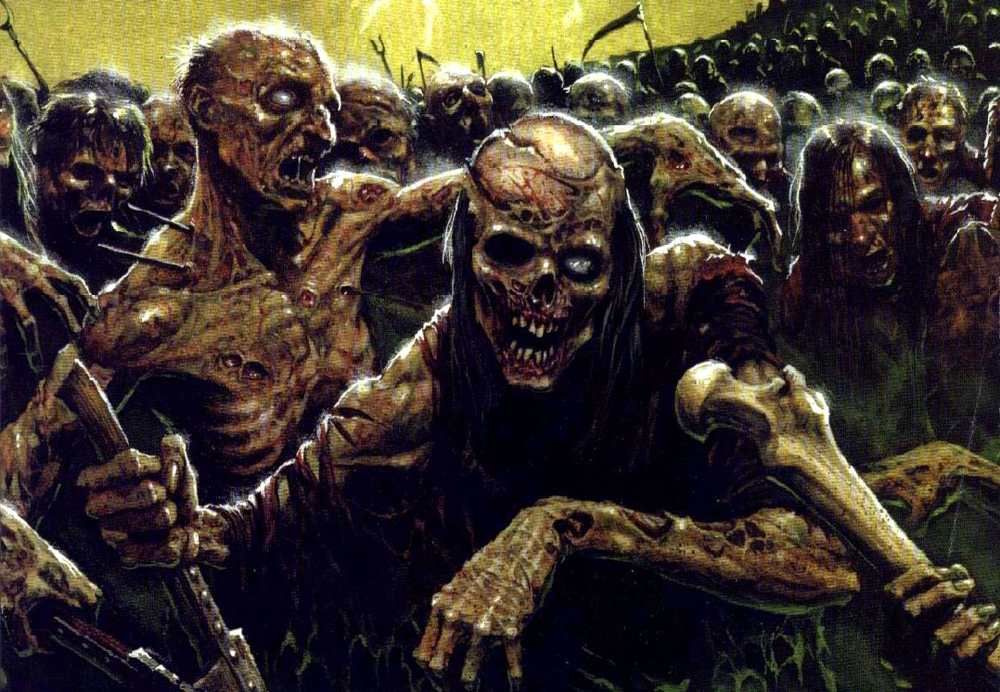

Dead like them
The dwarf grabs at your tunic as you rush by but his stubby fingers find no purchase on your cowardly hide.
The tunnel is filled with what you assume are the most vile and forbidden of Dwarven profanity, followed by a blood curdling scream that will haunt you for the rest of your days however many they be.
Then silence, which is the most haunting sound of them all. You are now alone with only your ragged breath and heartbeat to keep you company.
After running for what seemed like an eternity you leave the mushy purple cave behind and return to the natural caverns with glowing mushrooms
In the distance you hear a low murmer. It might be a river but something isn't quite right about that.
As you continue the murmer grows louder and louder building into a cacophony of grunts, moans and shuffling.
The tunnel ends above a pit filled with the shambling dead, zombies, dozens of them.
Across the pit is something you never thought you would see again, daylight. The last rays of the day cast an orange hue on the outside world.
Freedom, safety, home, all so close you could smell it if not for all the rot.
The ledge you're on is about 15ft of the ground and there doesn't appear to be anyway back up so moving forward is a one-way ticket.
Something shiny catches your eye.
Below the ledge is a headless corpse wearing full plate mail emblazoned with the sigil of House Crowe, your lords house.
This must be the body of their lost son, Rusty Crowe, who left on a journey to rid the land of evil.
Clearly he was less than successful and clearly he should have invested in a helmet.
However, Rusty's famed weapon, The CroweBar, was planted in the skull of a large moist looking zombie also below the ledge.
You need to make a decision before the undead sniff you out.
Do you:
Cover yourself in bile. It's gross and you can't stop retching but now you're "one of them"
Grab the CroweBar. With a weapon this mighty you are sure you can make it!
Turn back. This is too dangerous, maybe there was a different path you missed?